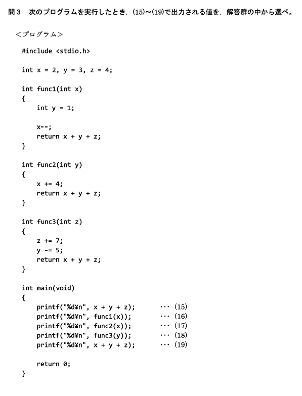
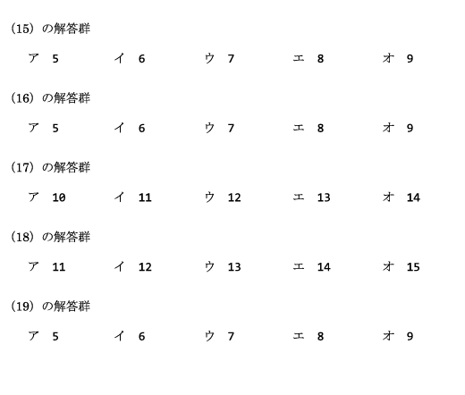
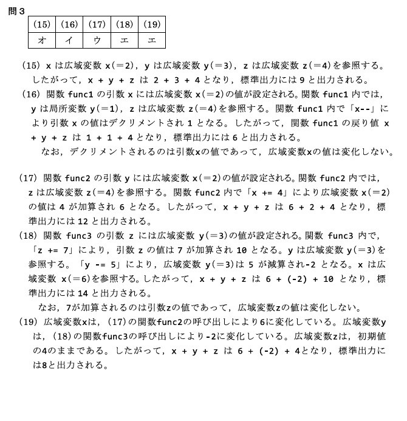
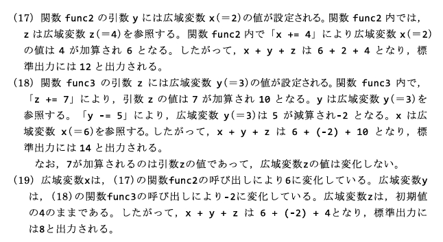

変数のスコープとは、その変数がどこで有効（アクセス可能）かを示す範囲のこと。C言語では大きく2種類ある。2級では「どこから参照できるか」「いつ初期化されるか」「同名のときどちらが優先か」、そして関数呼び出しごとの値の追跡（トレース）が問われる。
ローカル変数は、関数やブロック { } の中で宣言され、その範囲内でのみ有効な変数である。関数の外からはアクセスできない。
void exampleFunction(void)
{
int localVar = 10; /* ローカル変数 */
printf("localVar = %d¥n", localVar);
}localVar は exampleFunction の中でのみ使用できる。ローカル変数のスコープは、宣言されたブロック内に限定される。
{
int a = 5; /* このブロック内でのみ有効 */
}
/* a はここでは使用できない */ローカル変数は、関数が呼び出されるたびに新しく作られ、初期化される。前回の値は残らない。
void exampleFunction(void)
{
int counter = 0; /* 毎回 0 で初期化 */
counter++;
printf("counter = %d¥n", counter);
}
int main(void)
{
exampleFunction(); /* 出力: counter = 1 */
exampleFunction(); /* 出力: counter = 1 （前回の値は残らない） */
return 0;
}counter = 1 になる点に注意。ローカル変数は呼び出しごとに 0 に戻ってから ++ される。
グローバル変数は、関数の外部で宣言され、プログラム全体で有効な変数である。どの関数からでもアクセスできる。
int globalVar = 20; /* グローバル変数 */
void exampleFunction(void)
{
printf("globalVar = %d¥n", globalVar);
}globalVar は、どの関数からでもアクセスできる。グローバル変数のスコープは、宣言されたファイル全体に及ぶ（外部リンク時は複数ファイルにまたがることもある）。
プログラム実行中、グローバル変数は一度だけ初期化される。関数をまたいで値が共有・蓄積される。
int globalCounter = 0;
void incrementCounter(void)
{
globalCounter++;
printf("globalCounter = %d¥n", globalCounter);
}
int main(void)
{
incrementCounter(); /* 出力: globalCounter = 1 */
incrementCounter(); /* 出力: globalCounter = 2 （値が残る） */
return 0;
}counter（毎回1）と、この globalCounter（1→2）を見比べること。
ローカル変数とグローバル変数で同じ名前の変数が存在する場合、その関数の中ではローカル変数が優先される（グローバル変数は隠れる）。
int value = 100; /* グローバル変数 */
void exampleFunction(void)
{
int value = 50; /* ローカル変数（こちらが優先される） */
printf("Local value = %d¥n", value);
}
int main(void)
{
exampleFunction();
printf("Global value = %d¥n", value); /* main にはローカル value が無いのでグローバル */
return 0;
}実行結果：
Local value = 50
Global value = 100exampleFunction 内の value = 50 はローカル変数なので、グローバルの value = 100 は書き換わらない。main 側ではローカル value が無いため、グローバルの 100 がそのまま表示される。
2級では、グローバル変数と同名の仮引数を持つ関数を呼び出し、各行の出力を答えさせる問題が出る。コツは次の2点。
( ) 内の変数）はローカル。グローバルと同名でも、関数内ではこの引数（＝渡された値のコピー）を指す。関数内で引数を変えてもグローバルには影響しない。次のコードで実際に追ってみる。グローバルは x=2, y=3, z=4 で開始する。
#include <stdio.h>
int x = 2, y = 3, z = 4; /* グローバル変数 */
int func1(int x) /* 引数 x はローカル（グローバル x を隠す） */
{
int y = 1; /* ローカル y */
x--;
return x + y + z; /* z はグローバル */
}
int func2(int y) /* 引数 y はローカル */
{
x += 4; /* x はグローバル → 書き換わる */
return x + y + z;
}
int func3(int z) /* 引数 z はローカル */
{
z += 7; /* ローカル z だけ変わる */
y -= 5; /* y はグローバル → 書き換わる */
return x + y + z;
}
int main(void)
{
printf("%d¥n", x + y + z); /* (15) */
printf("%d¥n", func1(x)); /* (16) */
printf("%d¥n", func2(x)); /* (17) */
printf("%d¥n", func3(y)); /* (18) */
printf("%d¥n", x + y + z); /* (19) */
return 0;
}| 行 | 呼び出し | 関数内での計算 | 出力 | 呼び出し後のグローバル |
|---|---|---|---|---|
| (15) | x + y + z |
2 + 3 + 4 | 9 | x=2, y=3, z=4 |
| (16) | func1(x)（x=2 を渡す） |
引数 x=2（ローカル）, ローカル y=1。x-- でローカル x=1。return = 1 + 1 + 4(グローバルz) |
6 | x=2, y=3, z=4 （グローバル x は不変） |
| (17) | func2(x)（x=2 を渡す） |
引数 y=2（ローカル）。x += 4 でグローバル x=6。return = 6 + 2 + 4 |
12 | x=6, y=3, z=4 （グローバル x が増えた） |
| (18) | func3(y)（y=3 を渡す） |
引数 z=3（ローカル）。z += 7 でローカル z=10。y -= 5 でグローバル y=-2。return = 6(グローバルx) + (-2) + 10 |
14 | x=6, y=-2, z=4 （グローバル y が減った） |
| (19) | x + y + z |
6 + (-2) + 4 | 8 | x=6, y=-2, z=4 |
func1 の x-- は引数（ローカル）なのでグローバル x は変わらない。func2 の x += 4 は宣言していない名前＝グローバルなので x=6 に変わり、(19) まで残る。func3 の z += 7 は引数（ローカル）なのでグローバル z は 4 のまま。一方 y -= 5 はグローバルなので y=-2 になる。




Q1. 次のコードを実行するとどうなるか。
void exampleFunction(void)
{
int x = 5;
printf("x = %d¥n", x);
}
int main(void)
{
exampleFunction();
printf("x = %d¥n", x); /* この行 */
return 0;
}正解：エ（コンパイルエラー）
ローカル変数 x は exampleFunction の中だけで有効。main には x が宣言されていないため、main の printf("x = %d", x) は「未宣言の識別子」でコンパイルエラーになる。
Q2. 次のコードの出力はどれか。
int x = 10; /* グローバル変数 */
void exampleFunction(void)
{
printf("x = %d¥n", x);
x++;
}
int main(void)
{
exampleFunction();
exampleFunction();
printf("x = %d¥n", x);
return 0;
}正解：ウ（10 / 11 / 12）
x はグローバル変数なので、関数をまたいで値が共有される。1回目の呼び出しで 10 を表示してから x++ で 11、2回目で 11 を表示してから 12。最後の main の出力は 12。
Q3. 次のコードの出力はどれか。
int value = 100; /* グローバル変数 */
void exampleFunction(void)
{
int value = 50; /* ローカル変数 */
printf("Local value = %d¥n", value);
}
int main(void)
{
exampleFunction();
printf("Global value = %d¥n", value);
return 0;
}正解：ア（Local value = 50 / Global value = 100）
exampleFunction 内では同名のローカル value = 50 が優先されるので 50 を表示。このローカル変数はグローバルを書き換えないため、main ではグローバルの value = 100 が表示される。
Q4. 下のコードの (15) の出力はどれか。
int x = 2, y = 3, z = 4;
int func1(int x) { int y = 1; x--; return x + y + z; }
int func2(int y) { x += 4; return x + y + z; }
int func3(int z) { z += 7; y -= 5; return x + y + z; }
int main(void)
{
printf("%d¥n", x + y + z); /* (15) */
printf("%d¥n", func1(x)); /* (16) */
printf("%d¥n", func2(x)); /* (17) */
printf("%d¥n", func3(y)); /* (18) */
printf("%d¥n", x + y + z); /* (19) */
return 0;
}正解：オ（9）
開始時のグローバルは x=2, y=3, z=4。まだ関数を呼んでいないので x + y + z = 2 + 3 + 4 = 9。
Q5. 同じコードの (16) func1(x) の出力はどれか。
正解：イ（6）
引数 x はローカルで 2 を受け取る。ローカル y = 1。x-- でローカル x = 1。z はグローバルの 4。よって 1 + 1 + 4 = 6。グローバル x は変わらない（2 のまま）。
Q6. 同じコードの (17) func2(x) の出力はどれか。（このとき渡す x はグローバルで 2）
正解：ウ（12）
引数 y はローカルで 2 を受け取る。x += 4 の x はグローバルなので x = 6 になる。z はグローバルの 4。よって 6 + 2 + 4 = 12。以降グローバル x = 6 が残る。
Q7. 同じコードの (18) func3(y) の出力はどれか。（このとき渡す y はグローバルで 3、x はすでに 6）
正解：エ（14）
引数 z はローカルで 3 を受け取り、z += 7 でローカル z = 10（グローバル z は 4 のまま）。y -= 5 の y はグローバルなので y = -2 になる。x はグローバルの 6。よって 6 + (-2) + 10 = 14。
Q8. 同じコードの (19) x + y + z の出力はどれか。
正解：エ（8）
ここまでで書き換わったグローバルは x = 6（func2）と y = -2（func3）。z はグローバルでは 4 のまま（func3 で変わったのはローカル z）。よって 6 + (-2) + 4 = 8。